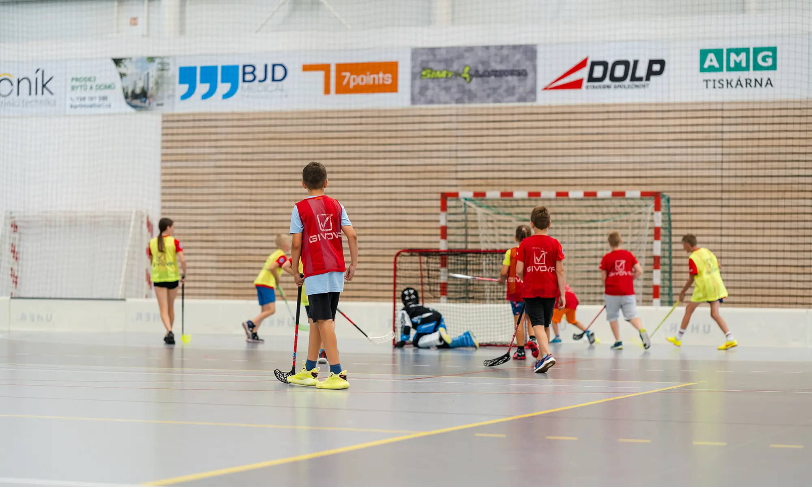
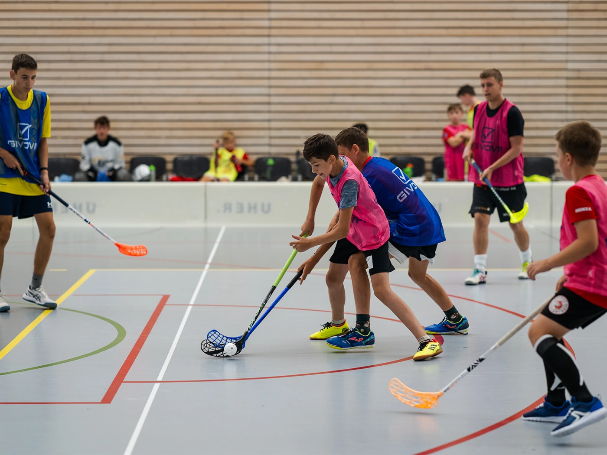
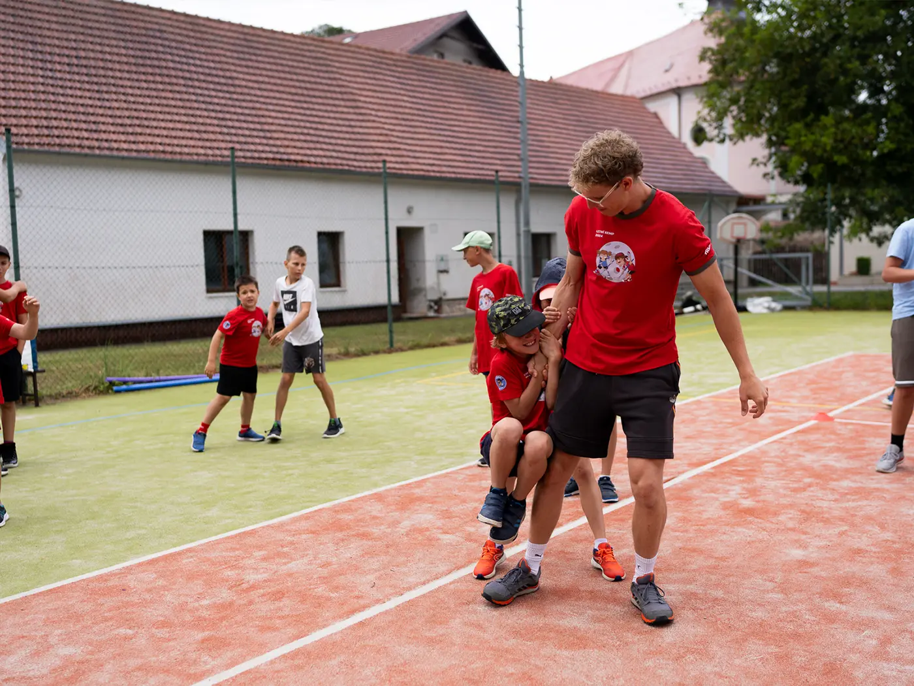

7–10 ročníky
Přípravka a elévové
Hry, honičky a první dotek s florbalkou. Jde hlavně o to, aby se pořád něco dělo a bavilo to.
Čtvrtek 17:00–18:00ZŠ TyršovaPátek 15:30–16:30SH Kuřim

Florbal v Kuřimi od šesti let
Trénujeme děti od přípravky po dorost i muže v jihomoravské lize. Nábor máme otevřený celý rok, první trénink je zdarma a florbalku půjčíme.
Kategorie se dělí podle ročníku narození. Na hraně dvou skupin rozhoduje spíš to, jak kdo hraje. Zavolejte trenérovi a domluvíme se.
Hry, honičky a první dotek s florbalkou. Jde hlavně o to, aby se pořád něco dělo a bavilo to.
Čtvrtek 17:00–18:00ZŠ TyršovaPátek 15:30–16:30SH Kuřim
Přihrávka, střelba a vedení míčku. Pořád hravě, ale už se chodí pravidelně.
Čtvrtek 18:00–19:00ZŠ TyršovaPátek 16:30–17:30SH Kuřim
Rychlejší tréninky, kondice a herní situace. Věk, kdy se z hraní stává florbal.
Pondělí 19:00–20:00SH KuřimPátek 17:30–18:30SH Kuřim
Ozvěte se předem trenérovi kategorie, ať o vás ví a počítá s vámi. Ničemu se tím nezavazujete, první trénink je zdarma a je přesně na to, abyste zjistili, jestli vás florbal chytne.


Každé léto pořádáme týdenní kemp pro děti od šesti do třinácti let, které k nám chodí na tréninky, jejich sourozence a výjimečně i kamaráda. Hala, venku, trenéři z klubu a parta, na kterou se pak těší celý rok.
Dospělý tým hraje jihomorovaskou ligu a je zároveň cíl, kam mládež směřuje. Tabulku i bodování máme na webu vždycky aktuální, stahuje se přímo z Českého florbalu.
Všechna alba najdete na Zoneramě, tady je výběr.
Napište nebo zavolejte trenérovi kategorie, do které vaše dítě patří. Odpovídáme obvykle do druhého dne.